Installation
Getting Started
To install ShiftCV theme you must have a working version of WordPress already installed. For information in regard to installing the WordPress platform, please see the WordPress Codex - http://codex.wordpress.org/Installing_WordPress
Update WordPress: To ensure a positive user experience, we highly recommend you update your WordPress to the latest stable version 3.5+. This will help to ensure that you are able to utilize all of the latest features of WordPress.
Extract the zipped package downloaded from ThemeForest to your desktop, in the extracted package you will find shift_cv.zip file.
You can install the theme in two ways:
- via FTP: Extract shift_cv.zip file and upload the extracted folder to /wp-content/themes/ folder on your server.
- via WordPress:
- Login to admin panel.
- Go to Appearance - Themes and click on the tab Install Themes. Choose upload.
- Click on Browse..., select the downloaded theme file and click in Install Now.
- After successfull installation click on Activate or go to Appearance - Themes and click on Activate to activate the newly installed theme.
- Next you will see a new menu item Appearance - Theme Options.
Important! For first time activation, you need to hit Save All Changes under menu Appearance - Theme Options.
Theme Update
IMPORTANT: Backup your old theme folder. Download it to your computer locally.
You can upgrade the theme in a couple of ways:
Overwrite the entire theme folder
Extract shift_cv.zip file and upload the extracted folder via FTP to /wp-content/themes/ folder on your server.
Re-upload via WordPress admin panel
Navigate to Appereance - Themes page. Activate a different theme. Delete previous version of ShiftCV and re-upload the shift_cv.zip file (refer to basic installation) downloaded from package.
What you start from
First of all, please pay attention to this unusual blog. This is a personal resume-website (portfolio website) with an option of keeping a blog. In the first place, a user gets into the page with your personal data, and then - into the blog. However, such algorithm may be easily changed in the section Appearance - Theme Options - General, where in the field ' Use as homepage' you can assign the blog page as your website's homepage.
However, in any case, the first thing after you install the theme should be specifying your personal information in the section Appearance - Theme Options - Profile.
Resume
Now, you are filling out the "Resume" section.
Resume Items
The articles of this block are similar to regular blog posts and are being created similarly. However, you need to consider the following nuances:
- Each post must necessarily belong to some category! When you put them out on the homepage in 'Resume' section, posts are being grouped by categories, and if a post does not belong to any category, it will not show up. Category depth in this particular section is not provided.
- You can set unique color for each category item under menu "Resume - Resume categories". This color using to mark category item.
- For each resume's post an additional information must be specified: 'Position' - your position (if the posts concerns your job), or your specialty/department (if it concerns your education), as well as 'Period' - a period of time you are talking about.
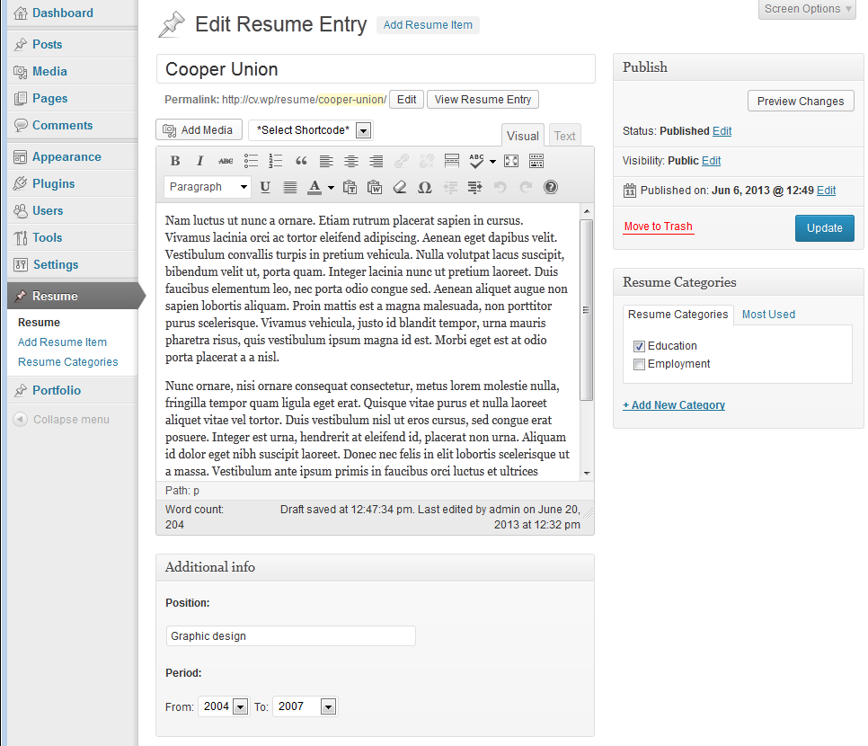
Resume sidebar
After you have created a few posts in 'Resume' section, you may start to create the sidebar. In this block, there is a Sidebar for visual graphic display of your skills and experience provided. To fill it out, please, go to the section Appearance - Widgets and add one or several widgets "WP Space Skills" into Resume Page Sidebar
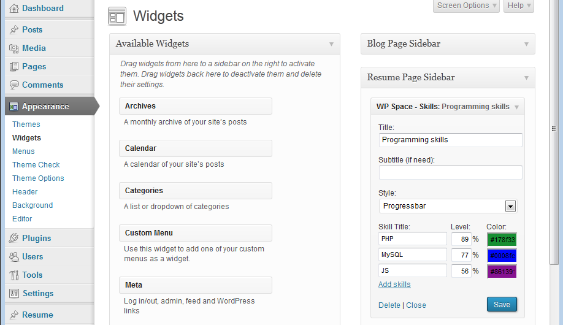
In each widget, please specify the title, choose the display style, and then add any number of skills (using the link "Add skills"). You should name each skill, specify the level of competence (percentage) and the color to display it in widget.
You may install several of such widgets. Each of them will be illustrating its own direction of your skills and knowledge.
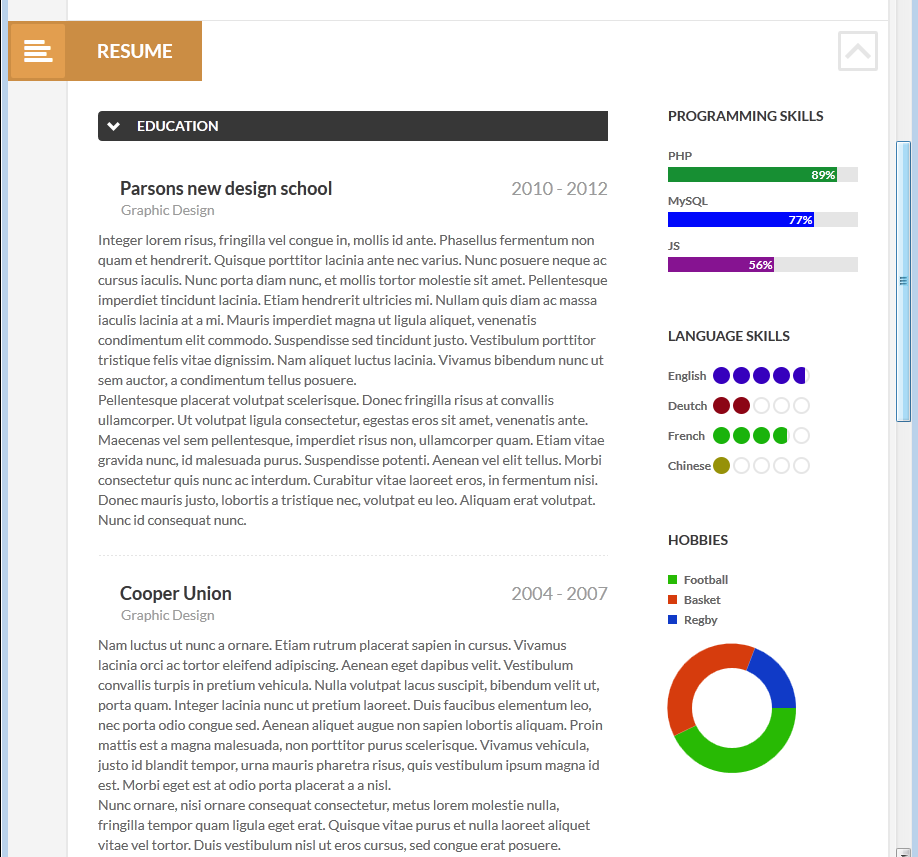Portfolio
Now, let's talk about the content of the 'Portfolio' section.
Since the portfolio block on the homepage is showed as image gallery with an option to filter the posts (categories are used as filter's ), when creating each item of Portfolio you need to enter the name, short description and choose Featured Image (which is necessary) - the illustration of your work.
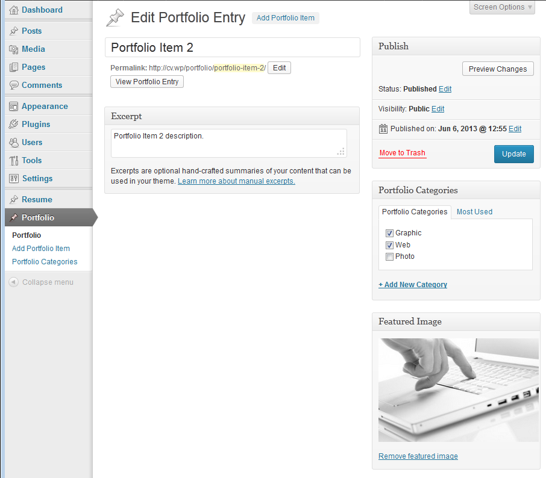
-
Click Set featured image on the right in the Featured Image section.
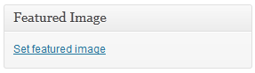 - Click Select Files button and select image to upload. If uploaded image will be bigger, then WordPress will crop the image.
-
Please, upload the images of high quality and big size (especially if in Appearance - Theme Options - General the settings Image Dimensions is equal to "Retina ready")
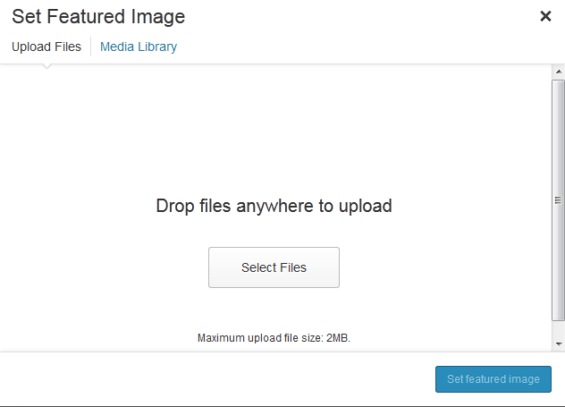
-
After the image was uploaded you need to set this image as a featured image. Click Use as featured image.
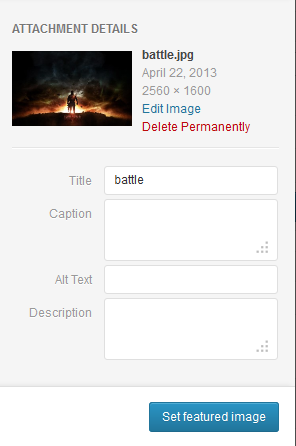
-
Publish this
Warning! You may control the number of the works displayed in the Portfolio section in the theme's settings: Appearance - Theme Options - General, in the field "Portfolio posts per page"
When creating or editing the post in Portfolio section, you can add the link to the video or the results of your work in the field “Portfolio link url”.
If you added the link to the video, when clicking on the image in the Porfolio section, lightbox that plays the video is opening.
Contacts
This area of the homepage consists of two parts:
- Google map that shows your location (your address is taken from the section Appearance - Theme Options - Profile)
- Feedback form that allows users of your website to send you information.
In Appearance - Theme Options - General you can switch the display of the components mentioned above on or off.
On ther right side from the contacts there is a Contact Page Sidebar. It is designed to display the "WP Space QR Code" widget.
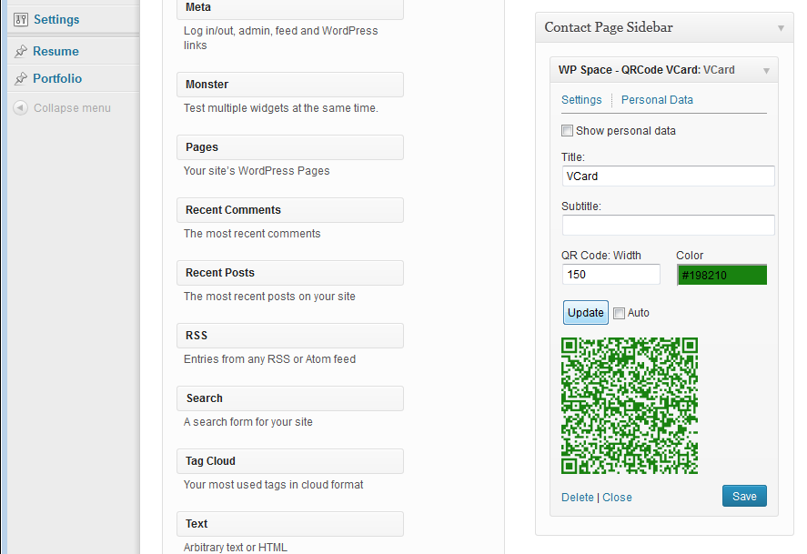
This widget allows you to install the QR code from your VCard 3.0, so that users of smartphones and tablets could add your data to their address book by simply taking a picture of a qr-code from the screen.
Please, pay attention! Be careful with the widget's size. If the size is less than 150 pixels, there is a chance that gadgets will not recognize the image.
And the last but not the least. Since the procedure for generating qr-code is quite resource intensive, it can cause a delay for older computers. Therefore, we recommend you to disable the automatic code generation after each data change (turn off the checkbox "Auto"). After filling out all the fields of the widget, click "Update", and the image will be generated again. Also, remember to generate an image before saving the widget (before clicking the "Save" button).
Blog Pages
Now, you have finished up the appearance of the homepage of your resume-website. It is time to start a blog.
To use the blog's functionality in our theme, you need:
-
Alow the blog on your page: Appearance - Theme Options - Blog:
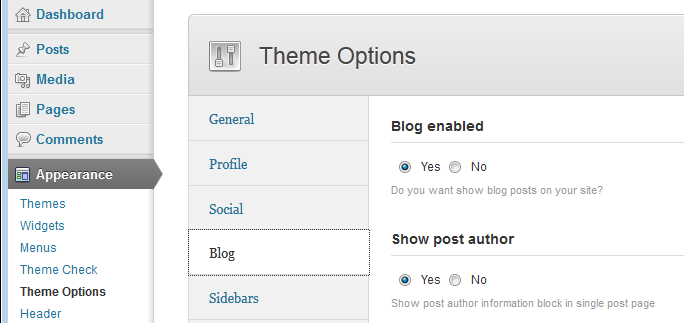
Here you can manage the display of different sections of the blog posts (on single page): whether to show the block of the post's author block, articles related to the post, social sharing etc or not. -
Create the block stream page. To do this, you need to:
- Go to Pages under the WordPress menu and then click on Add New.
- Put your Title as usual ("Blog streampage" for example)
-
Choose "Blog page" as the page's template
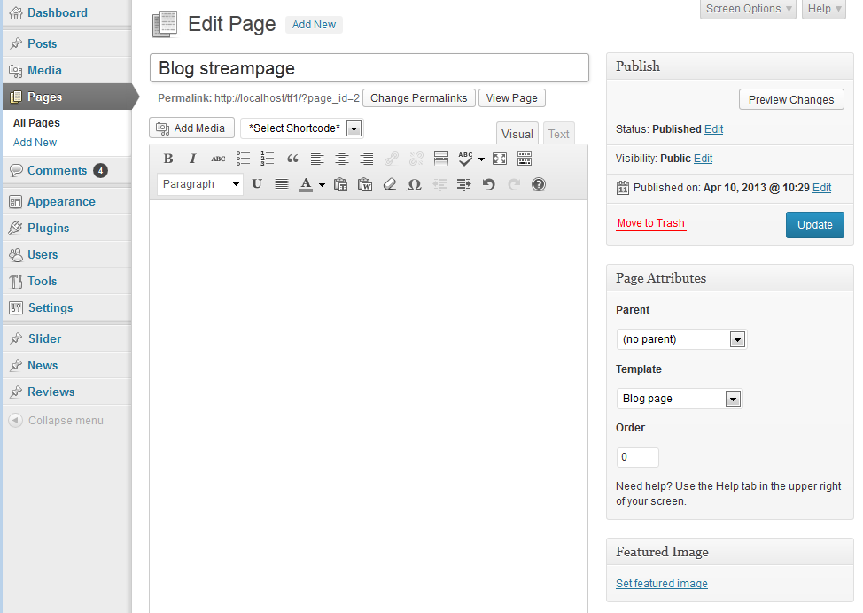
- Publish this page.
Blog Items
Now you can create blog posts.
- Go to Posts under the WordPress menu and then click on Add New.
- Put your Title as usual.
- Put Content if needed.
Select one or more categories to the Categories.
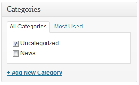
Select desired Post Format.
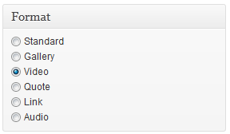
- Standart - just set the featured image or without featured image.
- Gallery - add the list of images into Post Options in the field Post Format URL, each one from new line
- Video - Add the YouTube or Vimeo url into Post Options in the field Post Format URL. See in the description the video format for YouTube and Vimeo
- Quote - Add the author into Post Options in the field Post Format URL.
- Link - Add the post oe other type page URL into Post Options in the field Post Format URL.
- Audio - Add the Audio file URL into Post Options in the field Post Format URL.
-
If you choose Post Format that is different from Standard, please specify additional parameters in section Post Options:
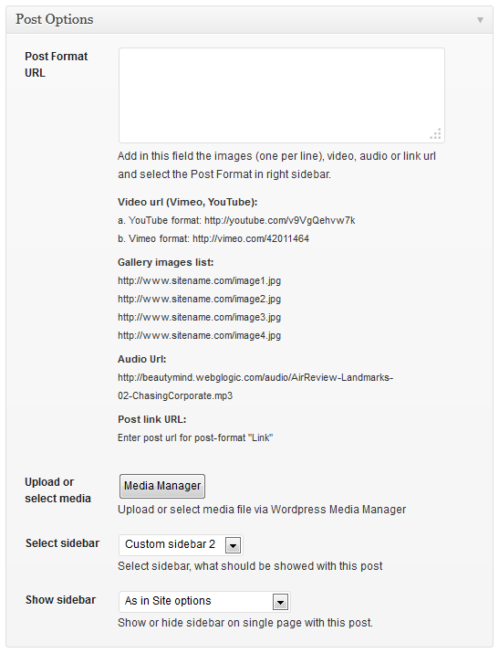
For every post item it is needed to upload an image and to set it as afeatured image. Click Set featured image on the right in the Featured Image section.
Click Select Files button and select image to upload (the full size image). WordPress will crop the image, depending on which portfolio template you will use.
-
After image was uploaded you need to set this image as featured. Click Use as featured image.
- Publish this post.
Blog Settings
You may set up the display of separate post's parts (the author information, related posts section, social sharing icons, etc) in the section Appearance - Theme Options - Blog.
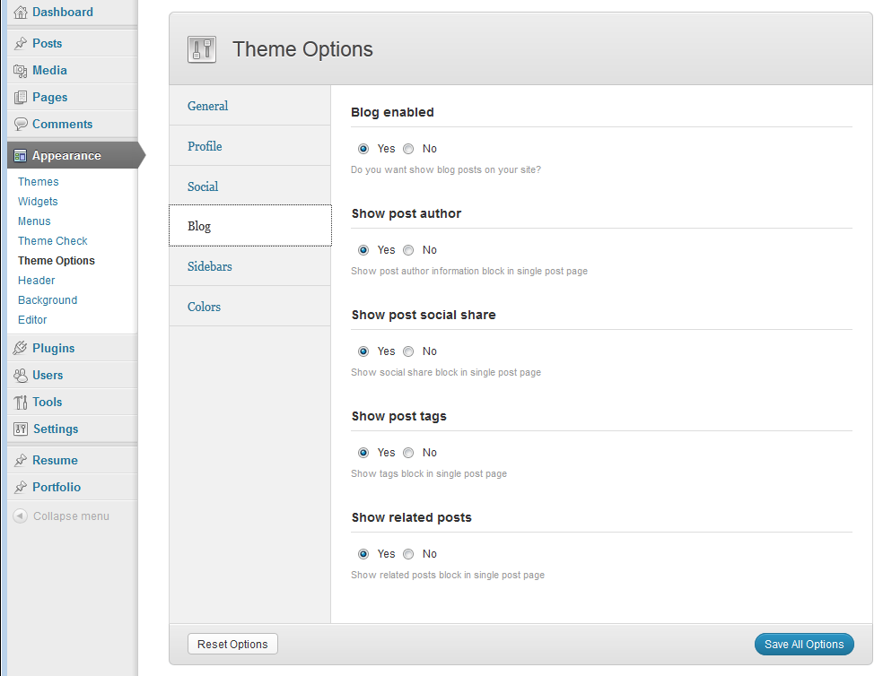
Also, you can set the settings for Blog page template in Standard WordPress Settings block: Settings - Reading
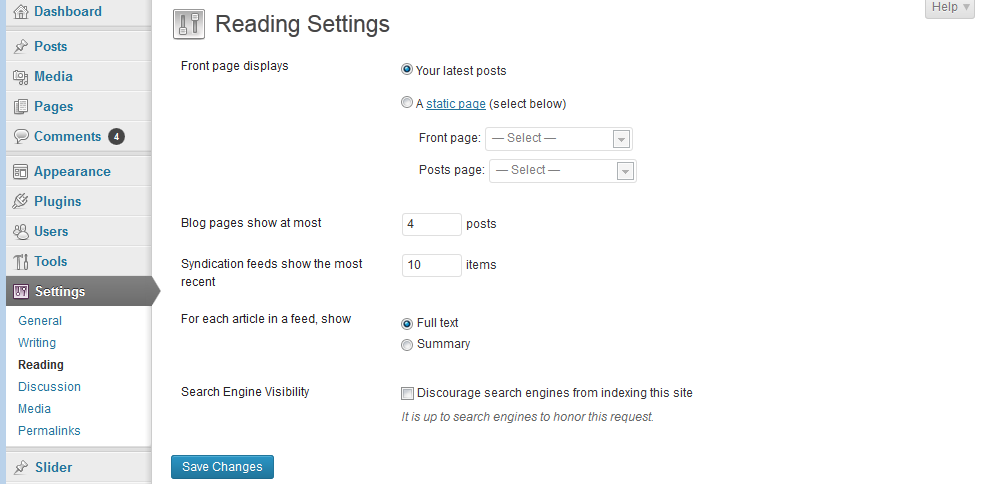
Blog pages show at most - How many items per page to show in Blog page template.
Theme Options
Now, let's talk about the theme's settings: Appearance - Theme Options. Here you will get full control over display and functionality of the web-site.
Some groups of the settings have been described above, in the sections dedicated to the Home Page, Blog and Resume.
Here we will consider the rest of the settings.
General
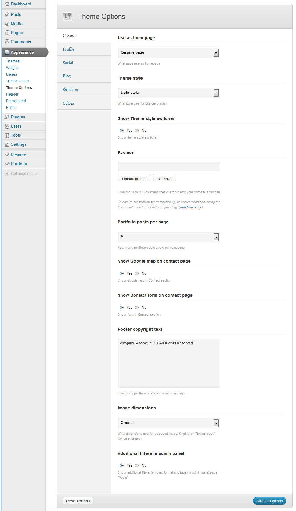
In this section you can set the following settings:
- Use as homepage -- It manages what section of your website will be used as homepage: resume and portfolio section or the blog.
- Theme style - What color scheme should be used when creating the websites pages.
- Theme style switcher - Do you want to show theme style switcher (user can select between 'dark' and 'light' theme style).
- Favicon - In this field, you can upload the icon to your website.
- Portfolio posts per page - How many images per one page should be put out in the Portfolio section. If there are more of the images in the Portfolio section - they will be devided into the pages, and users will be able to turn the pages.
- Show Google map on Contact Page - Whether to display Google map with your location in the Contacts block or not. Please, pay attention! For the marker's installation, the address indicated in Portfolio section is used on the map.
- Show Contact form on Contact Page - Wheter to display Contact form in the block Contacts.
- Footer copyright text - The text displayed in the bottom right corner of the page.
- Image Dimensions - What dimensions will be used to display images on the pages: "Original" - precise dimensions of the image block are used; "Retina Ready" - the image twice bigger fits into the original block (for accurate display on Retina).
- Additional filters in admin panel - Wheter to use extra filters for Post Format and Tags in admin panel when viewing the list of the blog posts.
Profile
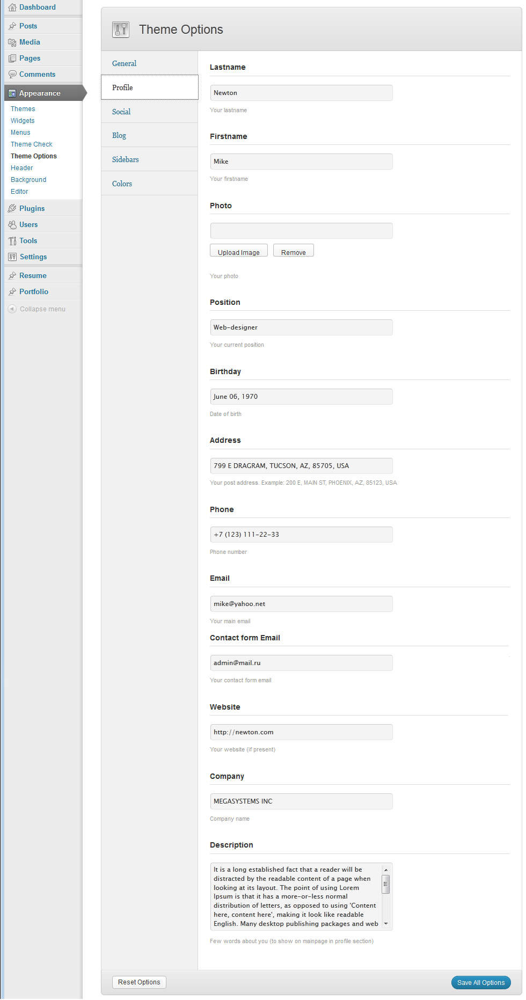
In this section you can set your personal information.
Attention!
- Data from the fields in this section are used in the widget "QR Code VCard". In the very widget, you can correct the information to generate qr-code.
- These fields of "Address" are used to generate Google Map!
- These fields of "Contact form Email" are used to send data from Contact form!
Blog
In this section you can enable/disable the display of the blog on your website, as well as to control the display of individual blocks on the detailed post page
Colors
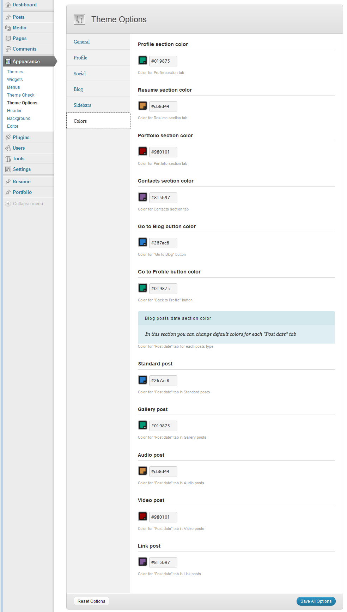
In this section you can customize colors set, used on tabs and buttons on your website homepage and blogpage.
In the section Section titles, in Theme Options, you yourself can edit the titles of the sections on homepage.
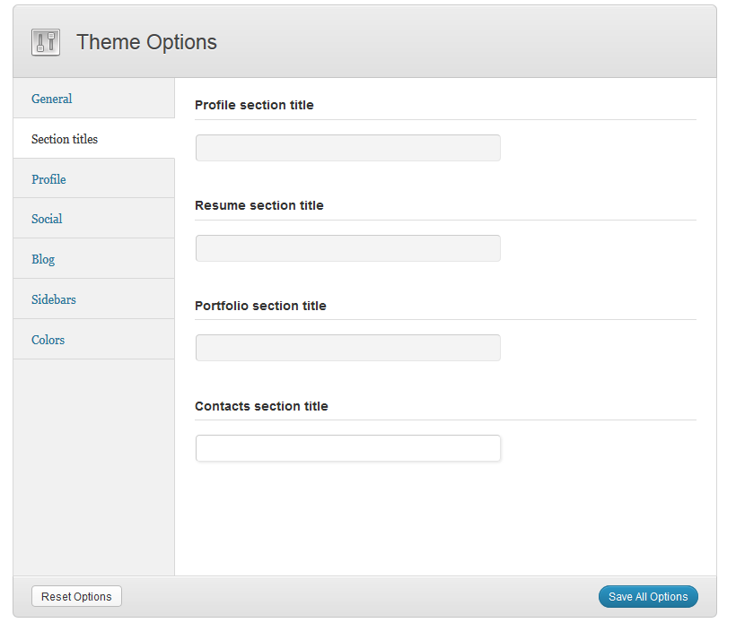
Widgets & Sidebars
ShiftCV theme comes with 3 default widget sidebars. Have a look in Appearance - Widgets.
Theme widgets sidebars:
- Blog Page Sidebar - Is used by default for the streampage and single blog posts.
- Resume Sidebar - Displays in the section "Resume". Designed exclusively for widgets "WP Space Skills". Usage of other widgets is not provided. If you decide to set up for this sidebar any widgets, developers will not be responsible for their incorrect display.
- Contact Page Sidebar - Displays in the section "Contacts". Designed exclusively for the widget "WP Space QRCode" to add a qr-code with your contact information in the format VCard 3.0. Usage of other widgets is not provided. If all the same you set this to any other sidebar widgets, developers are not responsible for their incorrect display. If you decide to set up for this sidebar any widgets, developers will not be responsible for their incorrect display.
- Up to 20 additional Custom Sidebars - they may be used for individual settings of the posts' and pages' display. The number of additional sidebars may be regulated in the section Appearance - Theme Options - Sidebars (see above).
ShiftCV theme has 5 custom widgets. Have a look in Appearance - Widgets.
Custom widgets:
- WP Space - QRCode VCard: Displays QR code with your VCard 3.0. Designed to be used on Contact Page Sidebar.
- WP Space - Skills: Displays levels of your knowledge and skills as diagrams. Designed to be used on the Resume Page Sidebar. It is allowed to use several copies of the widget within a sidebar.
- WP Space - Twitter timeline: Displays the Twitter timeline. Attention! On 11 June 2013 the company Twitter has closed public access to the users' pages, and now to display twitter timeline on your website, you must do the following:
- press the button 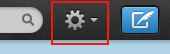 and select "Settings" from the menu that appeared.
- go to the "Widgets" section and create a new widget;
- select the type of "User timeline" and fill out the required settings.
copy the generated code and paste it into the corresponding field or write down the generated widget's ID and its username and insert them into the corresponding fields of our widget.
- WP Space - Recent Blog Posts: Displays the most recent posts. Unlike the standard widget, it displays the post's author's name as well.
- WP Space - Recent Comments: Displays the most recent comments. Unlike the standard widget, it displays the date the comment was added.
On the page of category’s edition or creation, you can choose the sidebar and its location (right or left). This option will be applied for category page. There you will also be able to select corresponding options for the category’s posts as well.
Shortcodes
Shortcodes are a cool feature in WordPress that essentially allows you to do some pretty incredible things by just inserting a shortcode into a page or post. Using Shortcodes is a breeze, just insert one where you want the relevant content to show up.
The theme comes pre-packed with a number of shortcodes allowing you to add the info easier.
Attention: Please make sure to always start new shortcodes on new lines. Most of the time you wont encounter any errors if you don't do that but unfortunately WordPress does mess up the html sometimes. This is true for all shortcodes, but the inline ones like drop-caps buttons, those are the only ones that don't need a new paragraph.
Here's a list of the shortcodes included in ShiftCV theme.
Title
Generates standard html title tag.
Parameters:
- style - (number). The title level from 1 to 6
[title style="1"]Title text here[/title]
Line
It creates the link of the set style
Parameters:
- style - (string). The line style. It can take one of the following values: none|solid|dashed|dotted|double|groove|ridge|inset|outset
- width - (number).The line width. It can be set in pixels (simply specify the number) or as a percentage of the page width (specify number with percents). If this parameter is not specified - it gets100%.
- height - (number). Line width (in pixels)
- top - (number). How many pixels to indent before the line.
- bottom - (number). How many pixels to indent after the line.
- color - (string). The color line. You can specify the color (white|black|red|blue|green|brown|... - up to 140 styles) ot its code in format #rrggbb, where rr is a hexademical value of the red component, gg - a hexademical value of the green component, bb - a hexademical value of the blue component
[line style='solid' top='10' bottom='10' width='100%' height='1' color='#FF0000']
Infobox
Creates different types of messages.
Parameters:
- style - (string). The infobox style. It can take one of the following values: regular|info|success|error|result. If this parameter is not specified - it gets 'regular'
- static - (number). Sign of the static block. If this parameter is set to 0 - right in the block there is a button "x" and the block may be closed (disappear) when you click on it. If this parameter is not specified - it gets 1.
[infobox style='regular' static='1']Highlight text here[/infobox]
Image
Inserts an image into the text, pressing it (image) to the left or right edge of the text, and the next image text flows around it on the opposite side.
Parameters:
- src - (string). URL of the image
- width - (number). the image's width (in pixels).
- height - (number). the image's height (in pixels).
- title - (string). Text at the bottom of the image.
- align - (string). Alignment of the image. It can take one of the following values: left|right
[image src="images/1200.jpg" width="300" height="150" title="Funny cat" align="left"]
Highlight
Used to highlight a text with the font's color and / or background.
Parameters:
- color - (string). The color of the text. You can specify the color (white|black|red|blue|green|brown|... - up to 140 styles) ot its code in format #rrggbb, where rr is a hexademical value of the red component, gg - a hexademical value of the green component, bb - a hexademical value of the blue component
- backcolor - (string). The background color of the text. The same parameter as color.
[highlight color="white" backcolor="red"]highlighted text[/highlight]
Quote
Used to emphasize the big and small quotes in the text.
Parameters:
- style - (number). The style of citations disply. It may be 1 or 2.
- cite - (string). URL of the site with the original.
[quote]Et adipiscing integer, augue mus vel tincidunt porta[/quote]
[quote style="2" cite="http://somesite.com"]Et adipiscing integer, augue mus vel tincidunt porta[/quote]
Tooltip
Used to create pop-up tips that appear when you hover over a given piece of text.
Parameters:
- title - (string). Tooltip text.
[tooltip title="Tooltip text here"]Et adipiscing integer[/tooltip]
Dropcaps
Used to create the dropcaps effect - special highlighting of the first letter in a paragraph.
Parameters:
- style - (number). Display style of the first letter. The value can be from 1 to 3. If not specified - use 1.
[dropcaps]paragraph text[/dropcaps]
[dropcaps style="2"]paragraph text[/dropcaps]
Audio
Inserts an audio file.
Parameters:
- url - (string). URL of an audio file
- controls - (number). Whether to display the playback controls. The value can be 0 or 1.
[audio url="http://somesite.com/audio/filename.mp3" controls="1"]
Video
Inserts a video file from one of the most popular video hosting services - youtube or vimeo.
Parameters:
- url - (string). URLof a video file
- width - (number). Video frame width in pixels.
- height - (number). Video frame height in pixels
[video url="http://vimeo.com/20245032" width="350" height="170"]
Section
Surrounds the selected text to the block and gives it the properties of a given class from the style table.
Parameters:
- id - (string). ID of the block
- class - (string). The name of class of the block
- style - (string). Style for the generated block
[section id="mini_window" style="width:200px;height:100px;overflow:auto;"]Et tincidunt porta[/section]
Columns
Creates columns in the text
Parameters:
- count - (number).The number of columns in the generated block. Attention! Inside the block [columns] ... [/columns] the number of blocks [column_item] ... [/column_item] must correspond to the parameter count.
[columns count="2"]
[column_item]Et adipiscing integer, scelerisque pid, augue mus vel tincidunt porta.[/column_item]
[column_item]A pulvinar ut, parturient enim porta ut sed, mus amet nunc, in.[/column_item]
[/columns]
List
Creates lists of different styles
Parameters:
- style - (number).List display style. It can take one of the following values: default|regular|check|bad|star
[list style="check"]
[list_item]Et adipiscing integer.[/list_item]
[list_item]A pulvinar ut, parturient enim porta ut sed, mus amet nunc, in.[/list_item]
[list_item]Duis sociis, elit odio dapibus nec, dignissim purus est magna integer.[/list_item]
[list_item]Nec purus, cras tincidunt rhoncus proin lacus porttitor rhoncus.[/list_item]
[/list]
Tabs
Creates blocks with tabs
Parameters:
- tab_names - (string). Headlines tabs listed per the sign "|" (vertical bar)
- style - (number). The tab display. It may be 1 or 2
- initial - (number).The number ofpreviously open tabs (from 1 to the number of tabs)
[tabs tab_names="Planning|Development|Support" style="1" initial="2"]
[tab]Randomised words which don't look even slightly believable.[/tab]
[tab]Fact reader will be distracted by the readable content of a page when.[/tab]
[tab]Distracted by the readable content of a page when. Looking at its layout.[/tab]
[/tabs]
Accordion
Creates blocks of the "accordion" type . Attention: at the same time only one of the blocks can be open
Parameters:
- style - (number). Accordion display style. It may be 1 or 2
- initial - (number). The number of the initially open block (from 1 to the number of blocks)
[accordion style="2" initial="2"]
[accordion_item title="Et adipiscing integer"]Et adipiscing integer, scelerisque pid.[/accordion_item]
[accordion_item title="A pulvinar ut"]A parturient enim porta ut sed, mus amet nunc.[/accordion_item]
[accordion_item title="Duis sociis"]Duis sociis, elit odio dapibus nec.[/accordion_item]
[/accordion]
Toggles
Creates blocks of type "toggles". Comparing to the "accordion" you can close all the blocks or open more than one.
Parameters:
- initial - (number). The number of the initially open block (from 1 to the number of blocks)
[toggles initial="1"]
[toggles_item title="Et adipiscing integer"]Et adipiscing integer, scelerisque pid.[/toggles_item]
[toggles_item title="A pulvinar ut"]A pulvinar ut, porta ut sed, mus amet nunc.[/toggles_item]
[toggles_item title="Duis sociis"]Duis sociis, elit odio dapibus nec.[/toggles_item]
[/toggles]
Table
Displays the table
[table] Paste here table content, generated on one of many public internet resources, for example: http://html-tables.com/ or http://tablegen.nfshost.com/ or http://www.impressivewebs.com/html-table-code-generator/ [/table]Google Map
Displays Google map at the address you specified
Parameters:
- address - (string). The address to which you want to display the map
- width - (number). Map frame width (in pixels or percents)
- height - (number). Map frame height (in pixels)
[googlemap address="25 Broadway, New York" width="400" height="300"]
Display Contact form
Parameters:
- title - (string). The Contact form's title
- description - (string). The Contact form's description. Displayed under title.
[contact_form title="Contact Form" description="Mauris aliquam habitasse magna a arcu eu mus sociis?"]
Hide
Hide any html block with desired selector (id and/or classes combination).
Attention! For advanced users only! Careless hide of objects can disrupt the design of your site. Be extremely careful.
Parameters:
- selector - (string). Id and/or classes combination (CSS-selector)
[hide selector="#sidebar .calendar"]
PSD Files
We've included 16 PSD files with this theme. All PSD files you can find in the folder PSD
Demo Content
We've included XML file ShiftCV_Dummy_Content.xml with content from our demo site that you can find in DemoContent folder inside the archive that you have downloaded from ThemeForest.
To import this information into a WordPress site follow these steps:
- Log in to that site as an administrator.
- Go to Tools: Import in the WordPress admin panel.
- Install the "WordPress" importer from the list.
- Activate & Run Importer.
- Upload the file "Content.xml" file using the form provided on that page.
- You will first be asked to map the authors in this export file to users on the site. For each author, you may choose to map to an existing user on the site or to create a new user.
- WordPress will then import each of the posts, pages, comments, categories, etc. contained in this file into your site.
Sources and Credits
This section discloses the sources of various files used within the theme and describes their function. Use this section to gain an understanding on how the theme functions behind the scenes if considering any type of modification.
- Fonts:
- Arial (standard)
- Helvetica (standard)
- Lucida Grande (non standard)
- Open Sans (non standard)
- Lato (non standard)
Georgia (standard)
All non standard fonts are from Google Web Fonts
We have used the pictures from:
http://www.bigstockphoto.com/
All images are copyrighted to their respective owners and not available for download with this theme.
Social Links
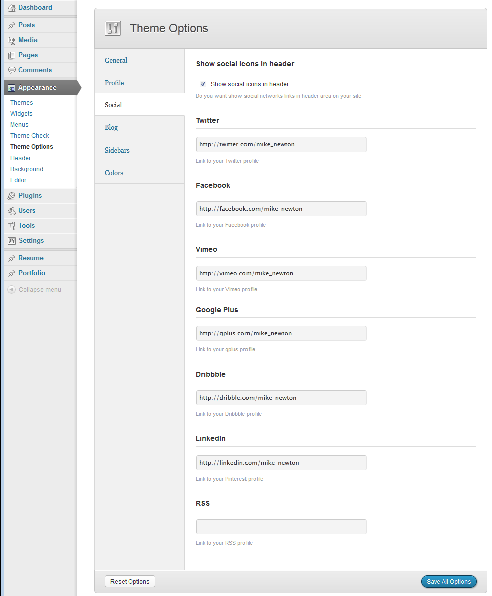
In this section you can set the following settings: